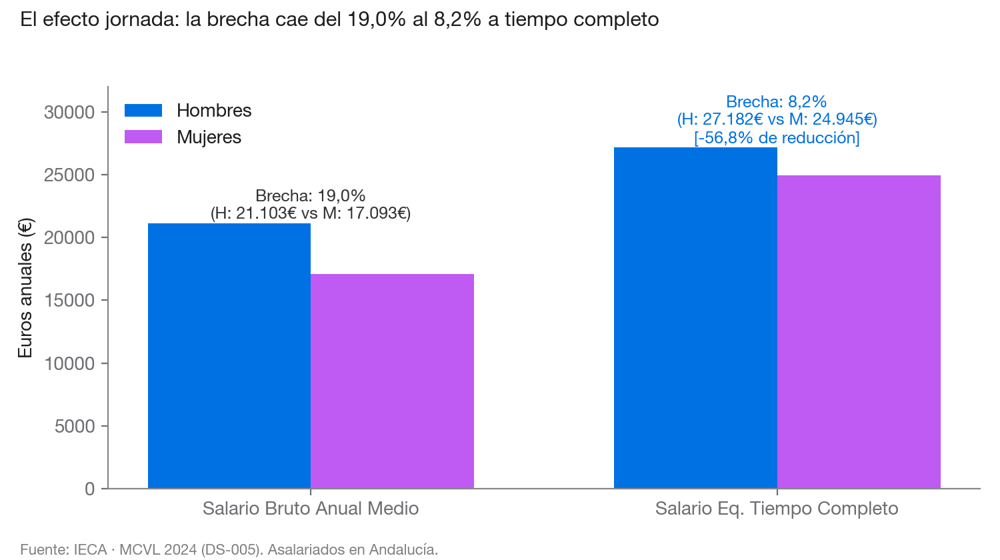
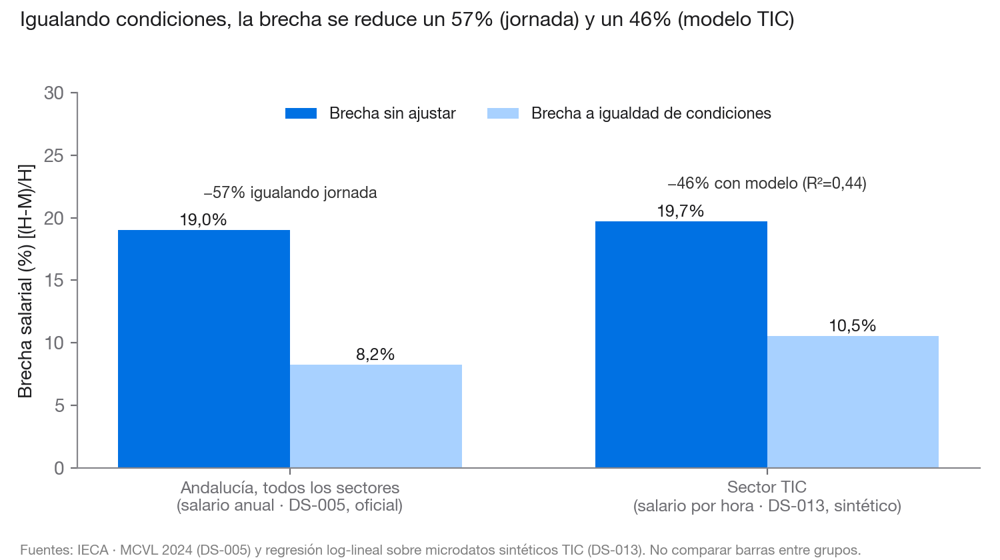

Cuánto de la brecha salarial entre hombres y mujeres en Andalucía es salario a igual trabajo, y cuánto es jornada.
Por qué importa: si es jornada, la palanca es la conciliación y la parcialidad no deseada; si es salario por hora, es la igualdad retributiva. Son políticas distintas.
Salario bruto anual frente a salario equivalente a tiempo completo, en media y en mediana.
Solo filas Hombres y Mujeres: descartamos el total «Ambos sexos».
Nuestras 4 brechas (media y mediana, bruta y equivalente) se comparan en código con la tabla oficial.
Si difieren más de 0,01 puntos, el notebook se detiene.
Regresión log-lineal del salario por hora:
ln(salario/hora) ~ mujer + edad + experiencia + antigüedad + horas + contrato + jornada + rol + tamaño + provincia + teletrabajo
R² = 0,44


Que los planes de igualdad publiquen la brecha por salario/hora efectiva y por tramo de jornada, no solo la cifra bruta anual.
Así se distingue si el problema es de conciliación (horas) o de retribución y promoción (salario por hora), y se actúa sobre la causa correcta.